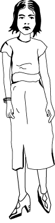

I want this website to be a place where I can go back and look at all the things I learned how to do while working on my Animation and Motion Graphics Degree at BMCC. I am already surprised and all the things I have learned in one short semester. I am excited to see it grow as I learn more skills and become proficient in different softwares.
